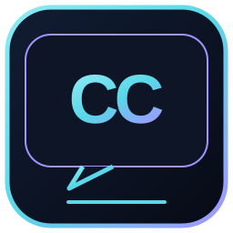
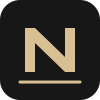

كل ما تحتاجه لعالم
Nuvio في تجربة واحدة
اكتشف أدواتك، واستكشف إمكانياتك، وانطلق بلا حدود.
رسالة ترحيبية
التفاصيل
01 / PLUGIN LIBRARY
مكتبة الإضافات
روابط Manifest واضحة، مع نسخ مباشر من نفس الصفحة.
 NUVIO
NUVIOCinemaBox
إضافة مستقلة لمشاريع Nuvio.
طريقة التثبيت: اضغط للفتح في Nuvio، وانتقل إلى الإعدادات، ثم المحتوى والاكتشاف، ثم الملحقات، والصق الرابط في خانة Manifest.
MANIFEST URL
https://raw.githubusercontent.com/HashimFaisal/CinemaBox2/main/manifest.json
جارٍ التحقق
NUVIO
Cinemana
مشروع إضافة مستقل ضمن مكتبة Nuvio.
طريقة التثبيت: اضغط للفتح في Nuvio، وانتقل إلى الإعدادات، ثم المحتوى والاكتشاف، ثم الملحقات، والصق الرابط في خانة Manifest.
MANIFEST URL
https://raw.githubusercontent.com/HashimFaisal/Cinemana_NuvioPlugin/main/manifest.json
جارٍ التحقق
 NUVIO
NUVIOALL-IN-ONE
إضافة All-in-One لمشروع Nuvio من المستودع الأصلي.
طريقة التثبيت: اضغط للفتح في Nuvio، وانتقل إلى الإعدادات، ثم المحتوى والاكتشاف، ثم الملحقات، والصق الرابط في خانة Manifest.
MANIFEST URL
https://raw.githubusercontent.com/NuvioPlugin/All-in-One-Nuvio/refs/heads/main/manifest.json
جارٍ التحقق

الترجماتOpenSubtitles v3
إضافة رسمية للبحث عن ترجمات الأفلام والمسلسلات عبر Manifest عام مباشر، بدون إعداد رابط شخصي.
MANIFEST URL
https://opensubtitles-v3.strem.io/manifest.json
جارٍ التحقق
TheSubtitleDB
إضافة ترجمات للأفلام والمسلسلات. رابط Manifest عام مباشر؛ إعداد اللغات والخيارات الإضافية متاح من صفحة المزود.
MANIFEST URL
https://api.thesubtitledb.org/integrations/stremio/manifest.json
جارٍ التحقق
SubtitleVideo
إضافة ترجمات متوافقة مع Nuvio، مضبوطة على اللغتين العربية والإنجليزية، وتجمع نتائج من عدة مزودين.
MANIFEST URL · ENGLISH + ARABIC
https://subtitlevideo.com/stremio/en,ar/manifest.json
جارٍ التحقق
 كتالوج
كتالوجRodrigo's Catalog
كتالوج لاكتشاف العناوين وبيانات الأفلام والمسلسلات، وليس مشغّل فيديو.
MANIFEST URL
https://digok.github.io/nuvio-catalog/manifest.json
جارٍ التحقق
 كتالوج
كتالوجCinemeta
مصدر بيانات الأفلام والمسلسلات. توافقه مع Nuvio يحتاج اختباراً.
MANIFEST URL
https://v3-cinemeta.strem.io/manifest.json
جارٍ التحقق

كتالوجNuvio Catalog
كتالوج لاكتشاف الأفلام والمسلسلات ضمن إضافة Nuvio Catalog.
MANIFEST URL
https://catalog.nuvio.tv/manifest.json
جارٍ التحقق
The Movie Database Addon
كتالوج وبيانات للأفلام والمسلسلات من TMDB، مع خيارات للبحث والتصنيفات واللغات.
MANIFEST URL
https://tmdb.elfhosted.com/manifest.json
جارٍ التحقق
 كتالوج
كتالوجİzlemeli Catalog
كتالوج للأفلام والمسلسلات مع بيانات ومصادر إضافية.
MANIFEST URL
https://izlemeli.github.io/nuvio/en/manifest.json
جارٍ التحقق
IMDb Popular
كتالوج لاكتشاف العناوين الشعبية اعتماداً على IMDb.
MANIFEST URL
https://imdb-popular-stremio.vercel.app/manifest.json
جارٍ التحقق
My Lists
كتالوجات لقوائمك الشخصية من TMDB وTrakt وMDBList، مع دعم الأفلام والمسلسلات.
MANIFEST URL
https://mylistsaddon.com/manifest.json
الإصدار 1.5.8
Torrentio
يوفّر مصادر تشغيل للأفلام والمسلسلات والأنمي عبر مزودي تورنت متعددين. يمكن تخصيص مزودي المصادر وخدمات Debrid من صفحة الإعداد.
MANIFEST URL
https://torrentio.strem.fun/manifest.json
متاح · الإصدار 0.0.15 · إعدادات اختيارية
Ratings Aggregator
يجمع تقييمات من IMDb وTMDB وMetacritic ومصادر أخرى. طريقة ظهور التقييمات داخل Nuvio تحتاج اختباراً.
MANIFEST URL
https://rating-aggregator.elfhosted.com/manifest.json
جارٍ التحقق
AIOMetadata
يجمع بيانات الأفلام والمسلسلات والأنمي من TMDB وTVDB وIMDb وAniList وMyAnimeList ومصادر أخرى. اضبط المصادر أولاً ثم استخدم رابط Manifest الشخصي لتثبيته في Nuvio.
PERSONAL MANIFEST URL
https://aiometadata.elfhosted.com/stremio/c6520fa9-2205-4058-baf9-d9e8e45a4711/manifest.json
متاح · الإصدار 4.1.0
TMDB Discover+
كتالوجات وبيانات اكتشاف إضافية من TMDB. هذا رابط Manifest الشخصي الذي تم توليده من صفحة الإعداد، وجاهز للتثبيت في Nuvio.
PERSONAL MANIFEST URL
https://tmdb-discover-plus.elfhosted.com/yMUI42Fodl/manifest.json
متاح · الإصدار 2.14.7
 ANIME DATA
ANIME DATAAnime Kitsu
كتالوج وبيانات أنمي من Kitsu، مع قوائم الشائع والأعلى تقييماً والأنمي الجاري عرضه.
MANIFEST URL
https://anime-kitsu.strem.fun/manifest.json
جارٍ التحقق
IMDb Ratings
يعرض تقييم IMDb للأفلام والمسلسلات والحلقات ضمن نتائج المصادر. لا يوفر كتالوجات مستقلة؛ يعتمد ظهوره على دعم Nuvio لمورد stream.
MANIFEST URL
https://imdbratings.kgenovz.com/manifest.json
جارٍ التحقق
 NUVIO METADATA
NUVIO METADATABetterPosters for Nuvio
يحسّن ملصقات Cinemeta ويضيف شارات التقييم والأنواع والاتجاهات والجودة والتصنيف العمري. الرابط الجاهز يغلّف Cinemeta فقط؛ عطّل Cinemeta الأصلي لتجنب تكرار الكتالوجات.
MANIFEST URL · CINEMETA WRAPPER
https://nuvio-better-posters.nuvio-better-posters-addon.workers.dev/eyJ2ZXJzaW9uIjoxLCJ1cHN0cmVhbXMiOlsiaHR0cHM6Ly92My1jaW5lbWV0YS5zdHJlbS5pby9tYW5pZmVzdC5qc29uIl19/manifest.json
جارٍ التحقق
ما لقينا موارد تطابق بحثك.
02 / AUTOMATED HISTORY
سجل التغييرات
تحديثات المصادر وحالات الفحص وإصدارات Nuvio.
جارٍ تحميل سجل التغييرات...
03 / OFFICIAL RELEASES
تنزيلات Nuvio
ملفات الإصدار الأحدث تُقرأ من تقرير الفحص.
جارٍ تحميل روابط التنزيل...
04 / DEVELOPER RESOURCES